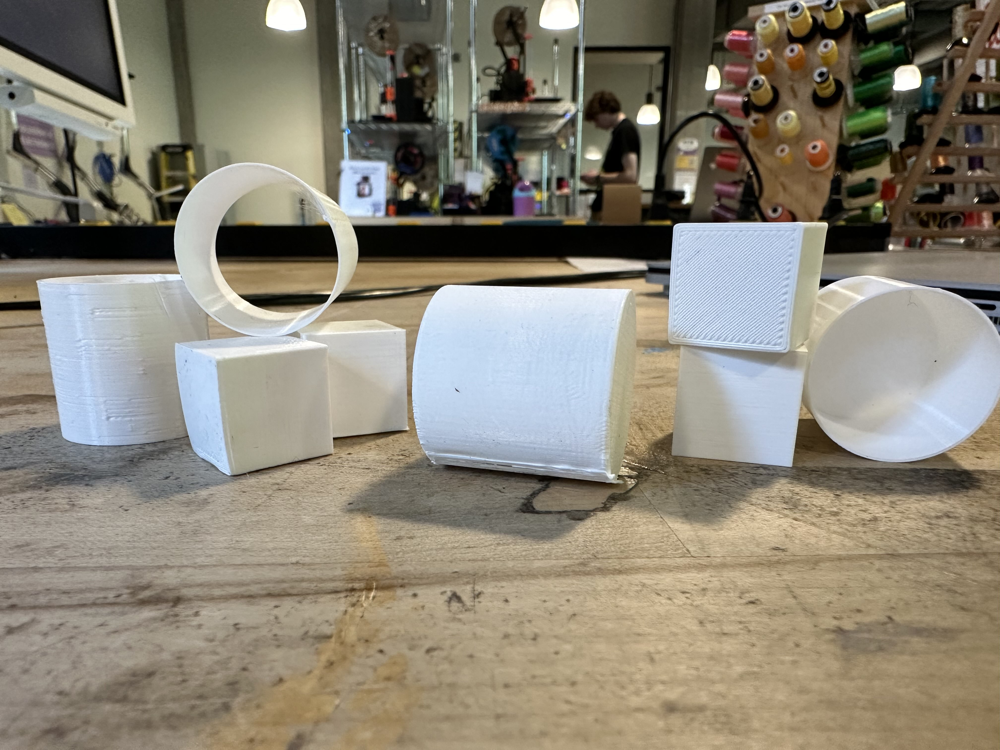

20.00mm high
19.95mm deep
19.99mm width
No skirt
Failures:
lifted at the edges that connected to the plate
Files:
wrong gcode
stl
19.97mm high
20.01mm deep
19.92mm width
No skirt
Failures:
failed to adhear to plate
failed halfway
lifted at the edges that connected to the plate
Files:
wrong gcode
stl
19.87mm high
20.02mm deep
20.08mm width
Skirt
Failures:
Files:
gcode
stl
20.01mm high
20.05mm deep
20.05mm width
No Skirt
Standard quality
Failures:
Didn't make it concentric the first attempt
Files:
wrong gcode
stl
30.03mm high
29.83mm deep
29.38mm width
0.48mm thick
Skirt
Standard quality
Failures:
Files:
wrong thickness stl
no thickness stl
29.96mm high
29.69mm deep
29.34mm width
0.82mm thick
Skirt
Standard quality
Failures:
Files:
wrong thickness stl
no thickness stl
30.11mm high
29.58mm deep
29.83mm width
0.55mm thick
Skirt
Standard quality
Failures:
file had preexisting thickness had to redo
Files:
stl
30.13mm high
29.96mm deep
29.98mm width
Skirt and supports
Standard quality
Failures:
file had preexisting thickness had to redo
Files:
stl
Design was for joining two existing triangles from the first 533 assignment, with a hinge between them.
First attempt after two bad starts was successful but had a lot of movement side to side, did not hold all cardboard triangles as tight as wanted, overall a little large, and finally the edges near the hinge impeded full range. Chamfered the inner edge for larger movement, decreased overall overall length, decreased the space in the slot, added small teeth for grip, added a stop on the one side, and created an inner grove for more ease of movement.
Second print at large scale failed but was still usable. Reprinted. Needed to add a second stopper to prevent movement, enlarged the chamfer for more range of angles.
Third print failed twice. Changed board on third attempt.
Final version:
Rhino file
stl file
gcode file
Other versions:
V2 stl
V1 stl